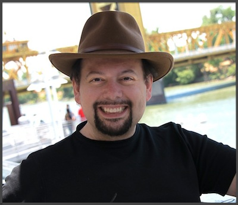

Who?
I’m Ramiro Salas and this is my personal site. Although I have some minimal presence in some social networks, everything I want to share publicly will be here. I write about general topics in technology, audio, politics, society, critical thinking, food, media, all sort of things. I’ve stumbled upon other people with my name out there, so let me clarify: I’m a Chilean-born Computer Engineer living in the Pacific North West, and working for Silicon Valley companies since 2000. Just to make sure we are clear…
Quick Bio
I was born in Puerto Natales, in the Chilean Patagonia. The oldest of five brothers and sisters, I developed a strong interest in science and later technology from a very early age.
I studied Computer Engineering at the University of Santiago, and I’ve been active in the field since 1987. Eventually, my experience and passion for this line of work opened up opportunities in the Silicon Valley, and I was invited to relocate to the United States in early 2000.
I like driving around, and discovering small towns and hidden places all over the Western United States and Canada, but I’m also a home body, and I enjoy overlooking at the Puget Sound from my place in Gig Harbor, WA, in the company of my wife and our two cats.
Areas of Interest
Technology
Obviously, technology is more than a career for me. It’s my real passion. I try to keep myself permanently up to date on the latest trends and I spend great part of my spare time exploring, testing and applying multiple technologies. Within this very broad specialty, I am particularly interested in topics related to distributed systems, online privacy, anonymity and security. Additionally, I’ve been very involved in virtualization and cloud computing since the early days.
I currently work for Pivotal Software. With that said, all opinions and points of view expressed in this site are mine, and they don’t necessarily represent the views of my employer. Please read the Disclaimer to understand what I mean.
Politics
Since I officially became a US citizen in 2007, I’ve been very interested in domestic politics with a point of view that many consider to be “all over the board”: liberal in social issues, moderate in economic issues, and libertarian on virtually everything else. I’m a registered (and actual) Independent.
Some of these views will be reflected on this site, although they’ll be mostly confined to the Politics tag.
Photography
In the early 2000s, I developed interest in Photography, shooting digital and learning about film afterwards. I used to have a separate site for that, but the hosting costs and the amount of work associated with processing and publishing became a burden and I had to shut it down. Part of my to-do list is to integrate a picture browser here so I can publish some of the pictures worth sharing.
Food and Cooking
As someone who I’ve traveled to over 30 countries, I’ve had the chance to experience the wonders of food and cooking in different cultures. I became a foodie during this process, but only in the last few years I decided to make serious incursions into cooking.
My approach to cooking started as an extension of my early years when I studied Chemistry. It was a scientific, precise and repeatable model, where everything is properly measured, documented and constantly improved, in a repeatable and reproducible way.
While all that is still true, I now also improvise, experiment, and have developed a more relaxed approach, which is also more enjoyable when I’m in the company of friends.
High-End Audio and Video
I’ve enjoyed music all my life, and I’m a real sucker for perfect audio reproduction. I even designed and built speaker systems many years ago, and recently I decided to get back in the game. I definitely expect to write about it here.
Skepticism and Critical Thinking
In spite of my personal interest in science, due to family upbringing, I was raised as a Jehovah’s Witness until age 18, at which point I send a resignation letter to that organization, citing strong differences of opinion when I was told “not to think” about a number of burning questions I had at the time, such the probability of extraterrestrial life given the sheer size of the Universe, among many other things that I saw as inconsistencies.
Since then, I spent most of my twenties and early thirties “searching” for answers in different spiritual movements, from Eastern philosophies to cults. At some point I became relatively famous as a speaker, lecturer and group organizer throughout Latin America for an organization that tried to reconcile science and spirituality, which in my opinion, failed to truly achieve this goal by attempting to redefine Science, and therefore failing to use the standard scientific method to test its postulates.
I finally embraced my first love: real Science, and opened my mind to live my life with uncertainty. I re-discovered Critical Thinking, and it gave me new appreciation for this extraordinary capability we have as a species, which for some reason, is not always welcome in all circles, even in this day and age. This path invariably lead me to become an atheist, and I’m open and vocal about it.
Without the intention of trying to convert anybody, I’m always happy to share my thoughts and ideas on this subject, and I may end up posting some writings on that here.